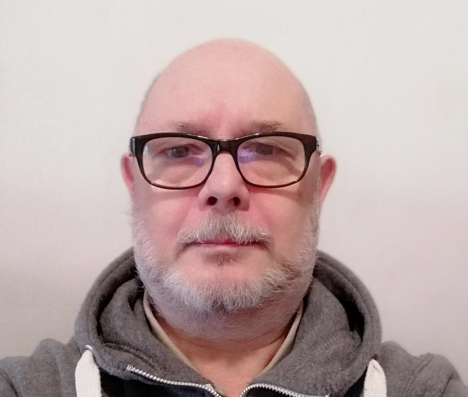

Enrique Juan Unger
Desarrollador web full stack Jr.
Técnico Superior en Seguridad e Higiene en el trabajo
contacto

Desarrollador web full stack Jr.
Técnico Superior en Seguridad e Higiene en el trabajo
contacto
10/2019 – 12/2019
IND. GUIDI SA (Burzaco; Buenos Aires)
Área: Seguridad e Higiene en el trabajo
Pasantía: Tareas específicas del área
2014 - 2018
Independiente
Área: Servicios
Tareas: Pintura; Jardinería; Reparaciones hogareñas menores
2011- 2013
Independiente
Área: Servicios Informáticos
Tareas: Reparación de PC; Cableado estructurado cat.5; Instalación de red informática
2007- 2010
Independiente
Área: Servicios
Tareas: Pintura; Jardinería; Reparaciones hogareñas menores
2000 - 2006
EDS S.A. (Buenos Aires)
(2002-2006)
Área: Networking / Telecomunicaciones
Puesto: Administrador de redes Jr.
Tareas:Administración de redes LAN-WAN (principalmente equipos Cisco con conocimiento de otras tecnologías), Soporte 2º nivel en diagnóstico y resolución de fallas,Interacción con proveedores de transporte de datos, Cableado estructurado, conectividad de usuarios, relevamiento instalaciones de clientes, documentación, Manejo básico central telefónica (AVAYA)
(2000-2002)
Área: Command Center
Puesto: Operador de sistemas
Tareas: Operación de sistemas (MVS, VSE, AS400) y control de procesos Monitoreo de redes (Castle rock) Procesamiento Backups con productos para plataformas Wintel y Unix
1990 - 2000
AMSA S.A. (Buenos Aires)
Área: Command Center
Puesto: Operador de sistemas
Tareas: Operación de sistemas (MVS, VSE), arranque y control de procesos Conectividad Sanatorios y Laboratorios asociados
1986 - 1989
FACEMA S.A (Buenos Aires.)
Área: Command Center
(1988 - 1989)
Puesto: Task Manager
Tareas: preparación de flujo de trabajo ; Corrección y debbug de cancelaciones de procesos
(1986 - 1988)
Puesto: Operador de sistemas
Tareas: Ejecución del flujo de trabajo en Sistemas: VSE, MVS, VM -
1983 - 1985
INARGIND S.A. (Buenos Aires.)
Área:Administración (Contaduría)
Tareas: Tareas generales área contaduría
Desarrollador Web full stack Jr.
Ministerio de Desarrollo de la Producción Plan Argentina Programa
Tecnicatura Superior en Seguridad e Higiene
Instituto Tecnológico Beltrán
CCNA
CISCO Academy
Técnico en Reparación de PC
UNQ (Universidad Nacional de Quilmes)
Análisis de Sistemas (cursado: hasta 3ª año)
Universidad CAECE
Bachiller
Inst. Eduardo L. Holmberg ( Quilmes )
Teléfono: pccc-nnnn enrique.unger@yahoo.com.ar
Móvil: 15 pccc nnnn